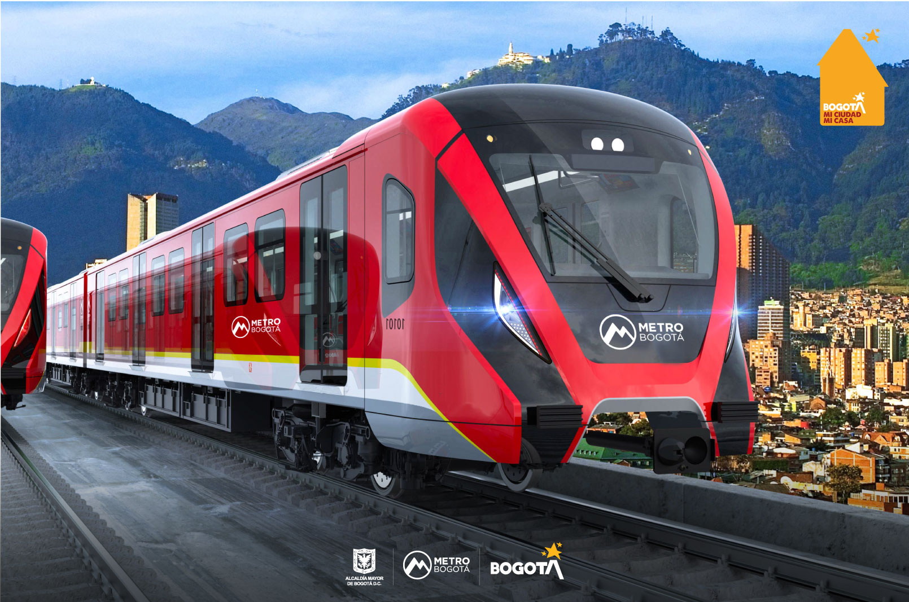
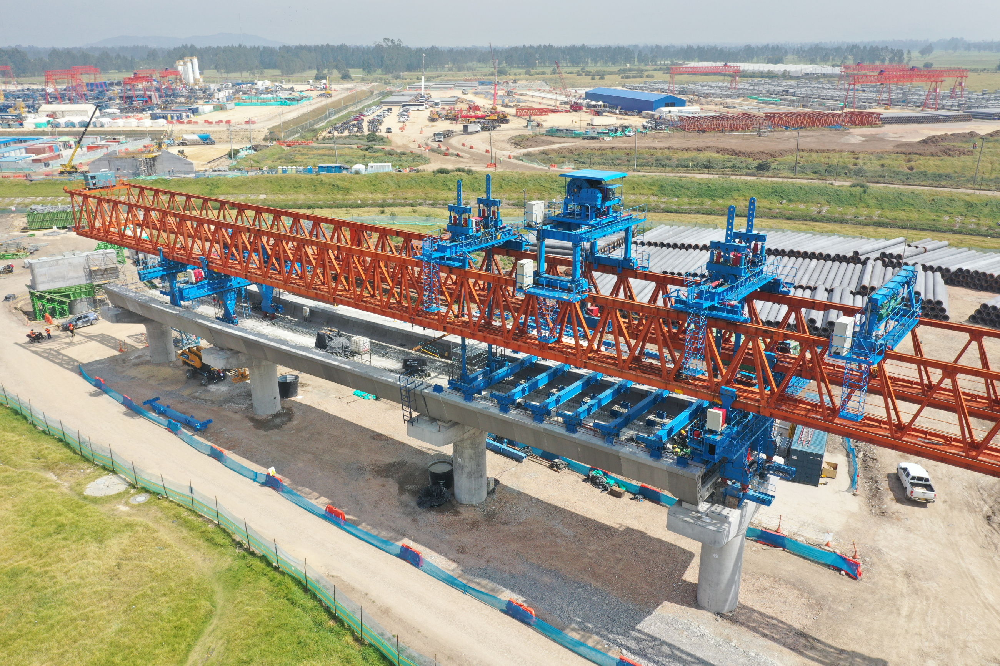
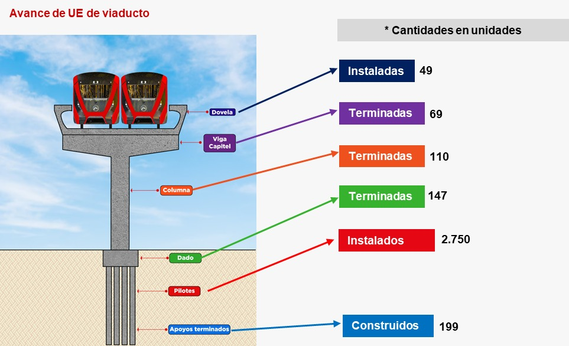

Avance Metro Bogota
Gracias al compromiso de todos logramos consolidar la movilidad sostenible, que se materializa en las primeras tres líneas de la Red Metro de Bogotá
Bogotá. 10 de septiembre de 2024. En mi casa trabajamos sin descanso para que dentro de muy poco todos podamos movernos mejor. Es por lo que continúan las obras de la Línea 1 del Metro de Bogotá llegando a 38.78 % de avance general con corte al 31 de agosto de 2024. Esto quiere decir que en el mes de agosto la L1 del Metro avanzó 2,37%. Esta cifra incluye tanto las actividades realizadas directamente por la Empresa Metro de Bogotá que son la Gestión Predial y el Traslado Anticipado de Redes, así como las totalidades de trabajos realizados por el Concesionario ML1 como los son las obras en los edificios del patio taller, las cocheras, los talleres de mantenimiento, el edificio de administración, la subestación eléctrica y los avances en el viaducto.
Bogotá, 29 de octubre de 2024. Este martes 29 de octubre la Empresa Metro de Bogotá (EMB) llevó a cabo la Audiencia Pública de Rendición de Cuentas, espacio en donde se dieron a conocer los logros alcanzados a lo largo del año 2024 relacionados con la columna vertebral de la movilidad sostenible para Bogotá que se materializa cada vez más en la Red Metro de la ciudad. Y todo esto se ha logrado gracias a la voluntad de la administración del alcalde Carlos Fernando Galán de construir sobre lo construido, a la paciencia de los ciudadanos, al compromiso de los más de 7.200 trabajadores vinculados al proyecto de infraestructura vial más importante del país y a la colaboración entre las diferentes entidades del Distrito que han permitido que la obra avance. Durante la audiencia, que se llevó a cabo esta mañana en las instalaciones del Parque de los Niños y las Niñas, en el que se encuentra el Vagón Escuela que le da vida a la estrategia de cultura ciudadana alrededor del Metro, se evidenciaron los principales avances y logros en materia de infraestructura de movilidad para la ciudad que cambiarán para siempre la manera en la que nos moveremos en las próximas décadas. “En mi casa se cumplen las promesas, y hoy le decimos con orgullo y satisfacción a todos los bogotanos que la Red Metro es una realidad. Basta con recorrer el trazado del proyecto para evidenciar los trabajos de la Línea 1 en más de 30 frentes de obra activos a lo largo de los 23,9 kilómetros del trazado que reflejan el compromiso de más de 7.000 personas vinculadas que trabajan sin descanso”, indicó Leonidas Narváez, Gerente General de la Empresa Metro de Bogotá (EMB). Y agregó: “Solo faltan 41 meses para la puesta en marcha de Línea 1 del Metro de Bogotá, que comenzará a moverse en septiembre del año 2027. Así mismo, la Línea 2 del Metro de Bogotá será adjudicada en abril de 2025 y en julio de este año con la Alcaldía de Bogotá, la Empresa Metro de Bogotá (EMB), la Gobernación de Cundinamarca, la Alcaldía de Soacha y la Región Metropolitana se firmó un convenio para aunar esfuerzos técnicos, administrativos y económicos para desarrollar los estudios de factibilidad de la Línea 3, de alcance regional, que nos permitirán avanzar sin contratiempos para seguir fortaleciendo esta columna vertebral que hará más eficiente la movilidad de millones de personas”.
Gracias a la paciencia de los ciudadanos, al compromiso de los más de 7.200 trabajadores del proyecto y a la colaboración entre las diferentes entidades del Distrito, cada vez estamos más cerca de cumplir el sueño que por más de ocho décadas han tenido los bogotanos de disfrutar de un sistema de transporte sostenible y amigable con el medio ambiente. Faltan 36 meses para la puesta en marcha de Línea 1 del Metro de Bogotá, que comenzará a moverse en septiembre del año 2027. La licitación pública internacional de la Línea 2 del Metro de Bogotá avanza sin contratiempos y será adjudicada en abril de 2025. En julio de este año la Alcaldía de Bogotá, la Empresa Metro de Bogotá (EMB), la Gobernación de Cundinamarca, la Alcaldía de Soacha y la Región Metropolitana, firmaron un convenio para aunar esfuerzos técnicos, administrativos y económicos para desarrollar los estudios de factibilidad de la Línea 3, de alcance regional.
